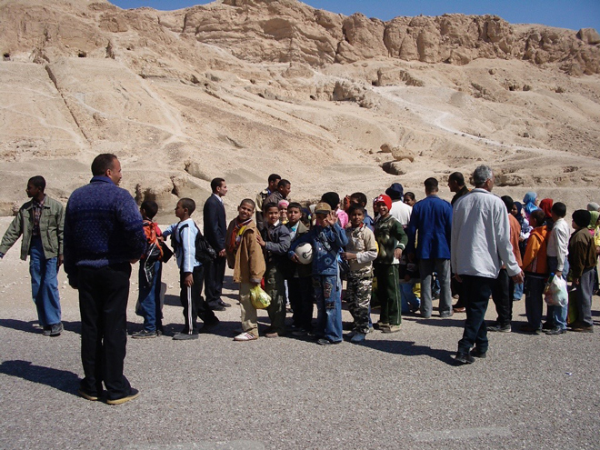
The Valley of the Kings, hidden between rocky escarpments, was the final resting place for the kings of the 18th, 19th and 20th dynasties. Their main attraction is their wonderfully vivid wall paintings - although tourists are not allowed to take photographs in the tombs. Since it was believed that the dead man, accompanied by the sun god (or perhaps having become one with the sun god) sailed through the underworld at night in a boat, the walls of the tombs were adorned with texts and scenes depicting this voyage and giving the dead man instruction on its course.
Above, some local children are taken to visit their heritage.
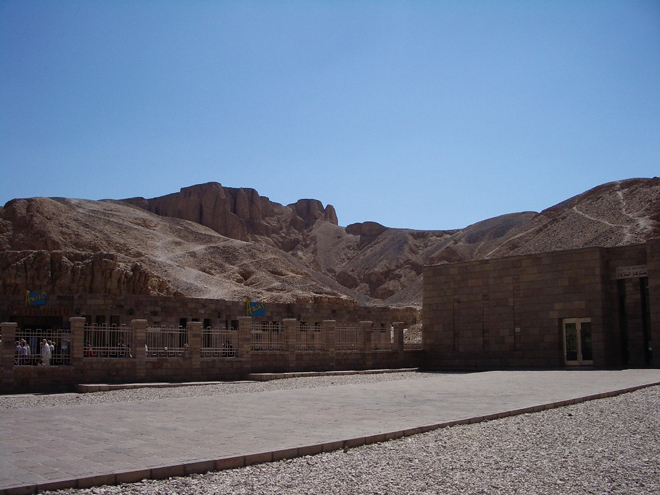
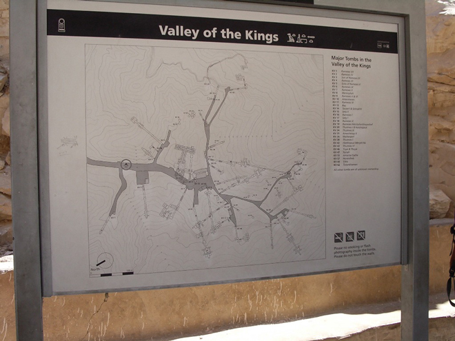
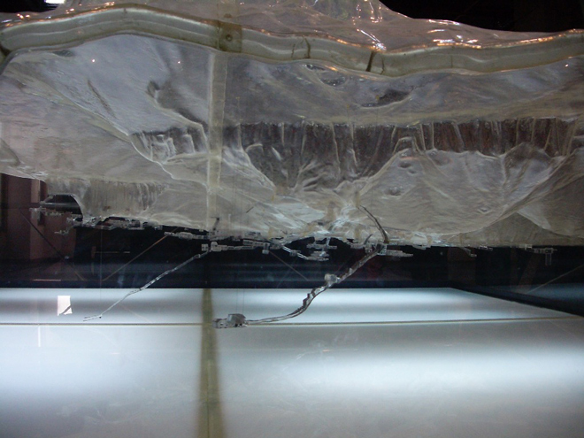
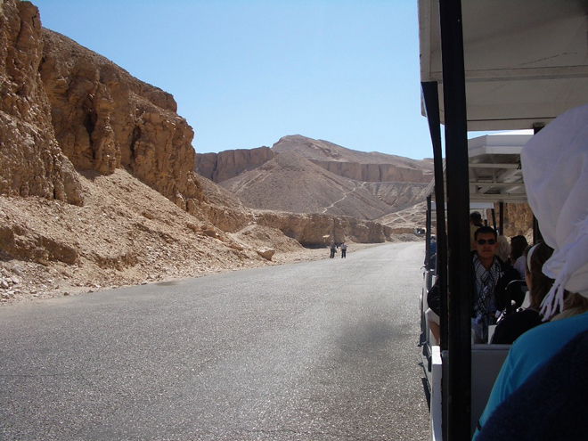
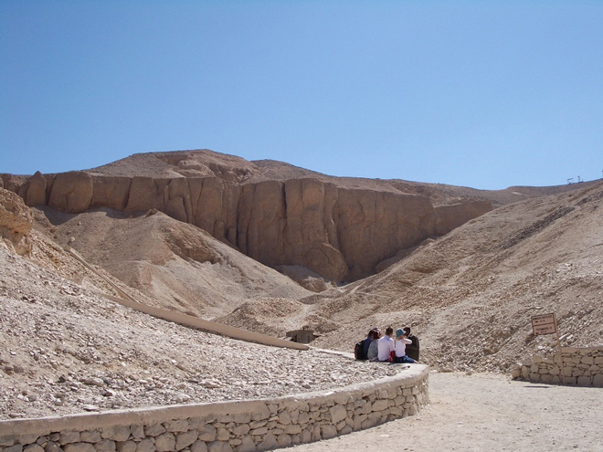
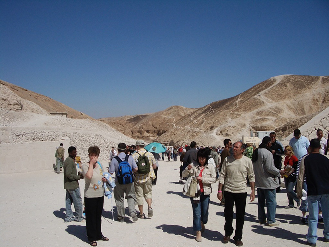
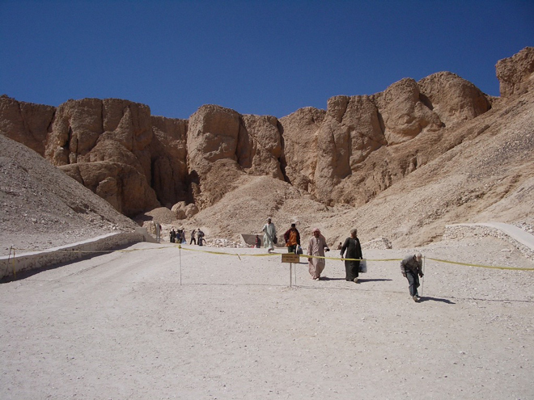
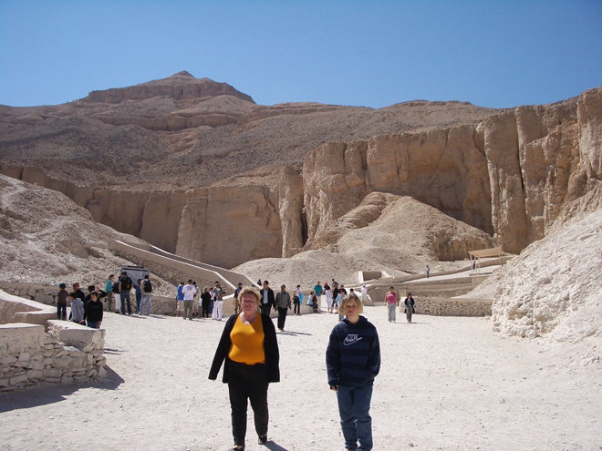
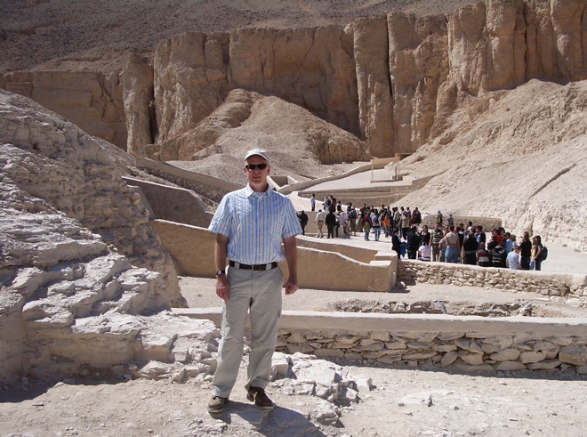
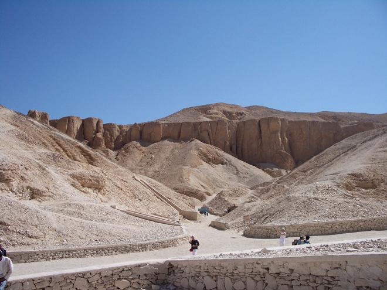
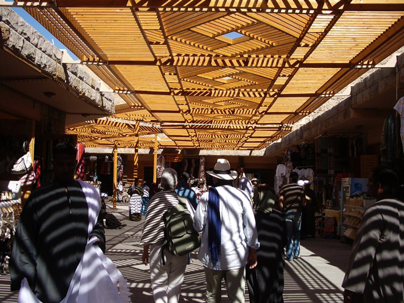